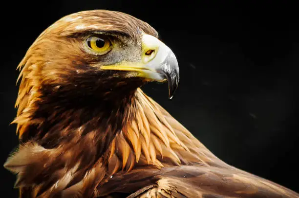

Die Majestät der Lüfte: Adler
Adler sind Inbegriffe von Kraft, Freiheit und Erhabenheit. In der Schweiz ist vor allem der Steinadler beheimatet, der oft als "König der Alpen" bezeichnet wird. Mit seiner beeindruckenden Flügelspannweite und seinem scharfen Blick ist er perfekt an das Leben im Hochgebirge angepasst.
Vergleich einiger Adlerarten
Obwohl der Steinadler der bekannteste in der Schweiz ist, gibt es weltweit viele verschiedene Adlerarten. Hier ein kleiner Vergleich:
| Art | Durchschnittliche Flügelspannweite | Hauptlebensraum | Besonderheit |
|---|---|---|---|
| Steinadler | 1,90 m - 2,30 m | Gebirge (z.B. Alpen) | Jagt Murmeltiere und junge Steinböcke |
| Seeadler | 2,00 m - 2,50 m | Nähe von Gewässern | Grösster Adler Europas, ernährt sich hauptsächlich von Fisch |
| Weisskopfseeadler | 1,80 m - 2,30 m | Nordamerika | Wappentier der USA |
Lebensraum des Steinadlers in der Schweiz
Der Steinadler bevorzugt offene und halboffene Landschaften im Gebirge. Die Schweizer Alpen bieten ihm ideale Bedingungen zum Jagen und Nisten. Die Karte zeigt das typische Verbreitungsgebiet.